What it does
One app for Windows, macOS and Linux, a web server for phones and browsers, and an Android app. They share the same Rust core. Free and open source (MIT or Apache-2.0). It is inspired by TDM but is an independent rewrite, and is not affiliated with the Tasmota project.
Finds every device
Reads Tasmota discovery and last-will messages from your broker. There's nothing to add by hand.
Five views
Home, Health, Firmware, Wi-Fi and MQTT. Each view has its own columns, sorting and search.
Relays and lights
One-click relay buttons. Colour wheel, brightness, white temperature and white channel for lights.
Safe upgrades
Follows the official upgrade path from very old releases, with a free-flash check and restart tracking at every step.
SetOptions editor
Every SetOption is decoded and explained. Risky options ask for confirmation, and the ones that would cut a device off are blocked.
Backup and restore
Saves and restores the full device configuration (Tasmota's own .dmp file).
Wi-Fi networks
Adds a second network or changes the one not in use, then switches a device between its two access points.
Read-only by default
Every start is read-only, so nothing is sent to your devices until you allow commands.
Tidy list
Shows or hides offline devices. Removing them also clears the old messages the broker keeps for them.
Upgrade very old Tasmota, safely
Devices on 6.x, 7.x or 8.x can't jump straight to the latest release: Tasmota needs its upgrade path, with the right image at each step.
- Sets the official image for each step, because old devices often point at dead OtaUrls.
- Checks free flash against the image size before each step.
- Follows every restart and checks the version before it offers the next step.
- Upgrades one device at a time, and only after you confirm.
A recorded run on a real Wemos D1 mini, from 6.7.1 to 16.0.0 →
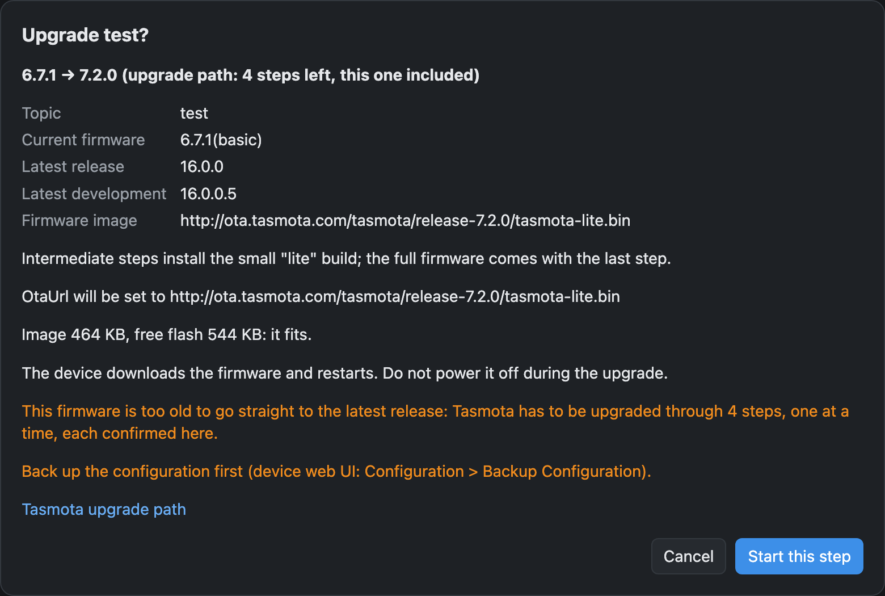
Desktop
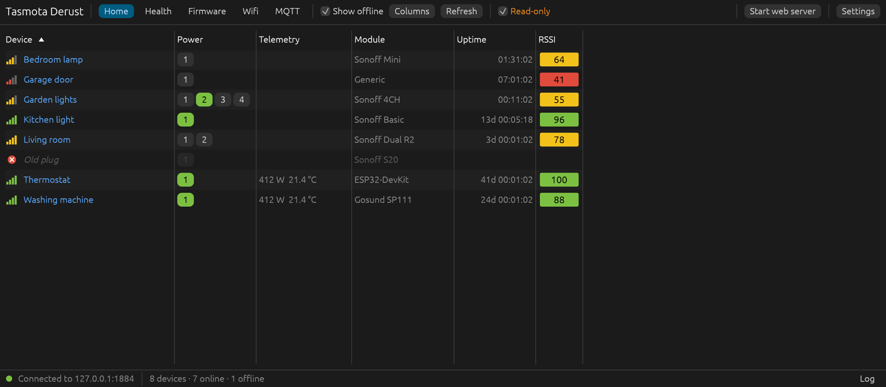
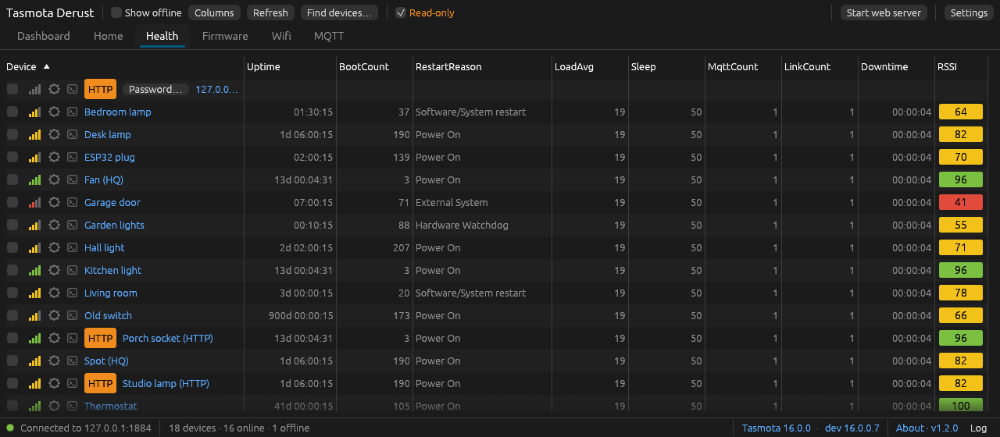
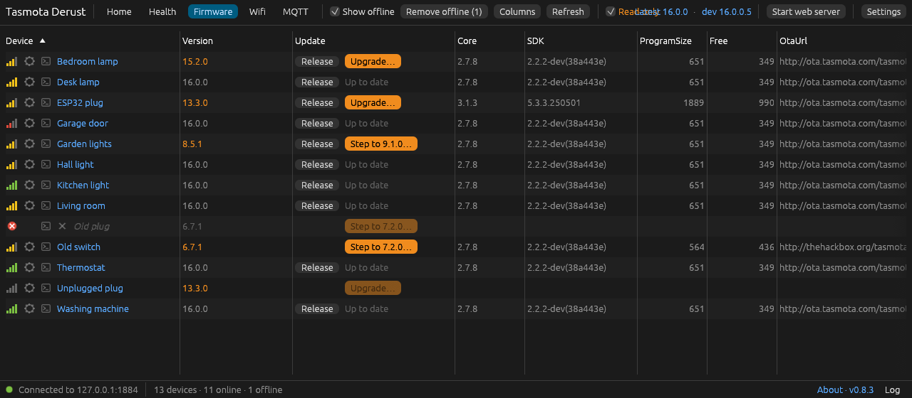
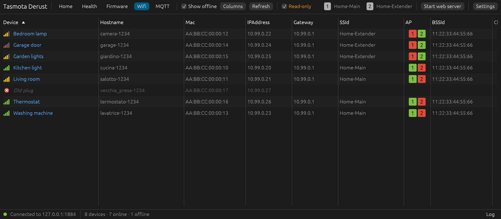
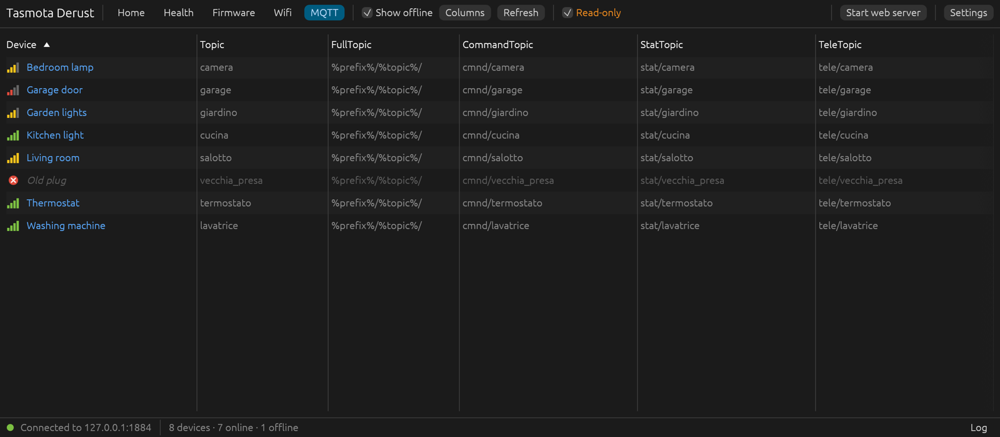
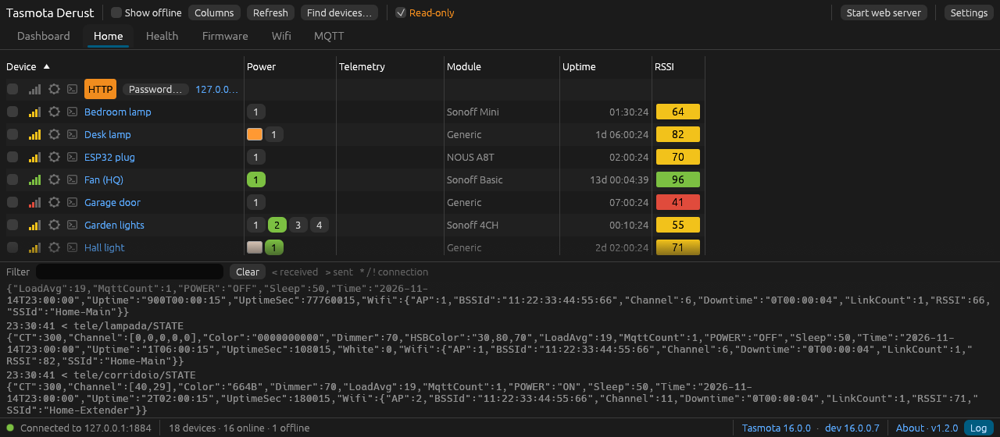
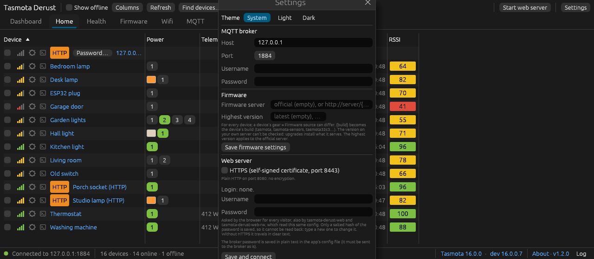
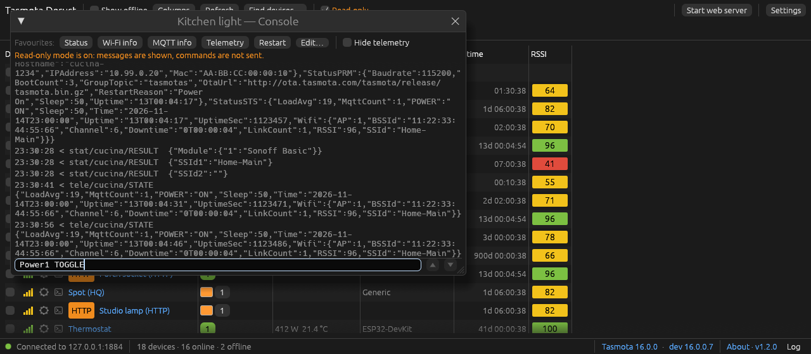
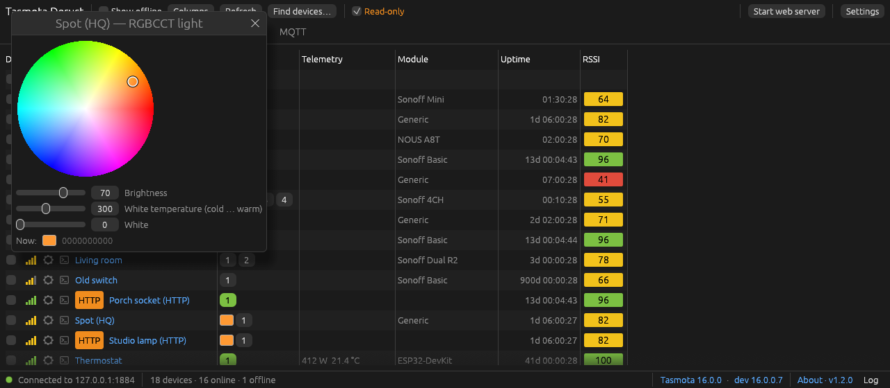
Android and phones
There's an Android app, and the web server gives any phone browser the same list.
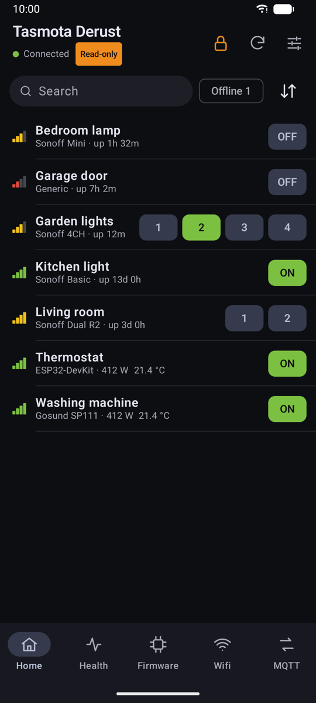
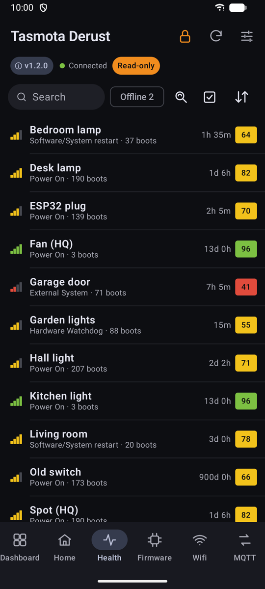
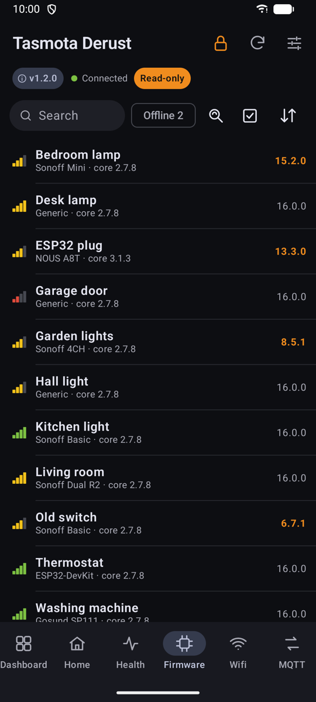
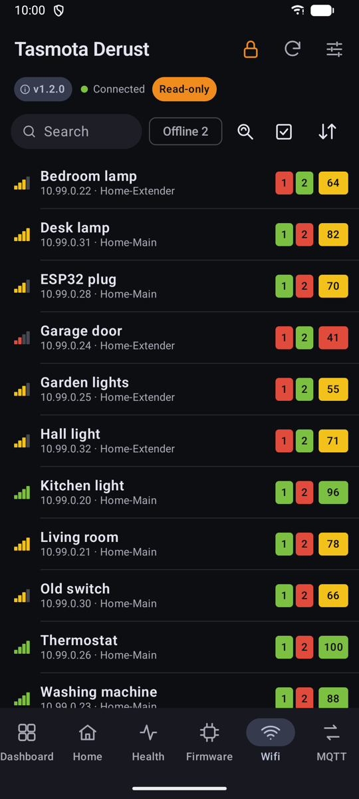
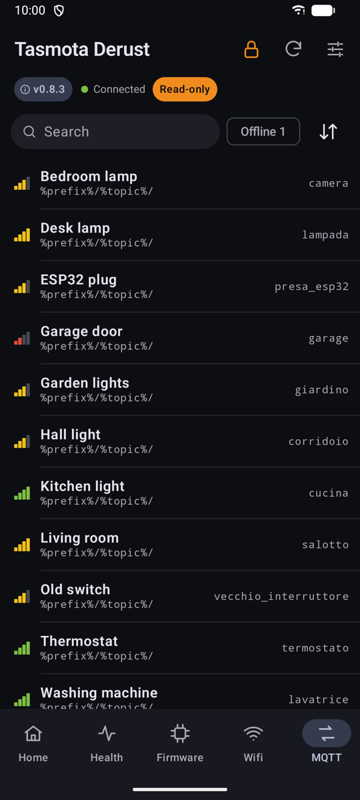
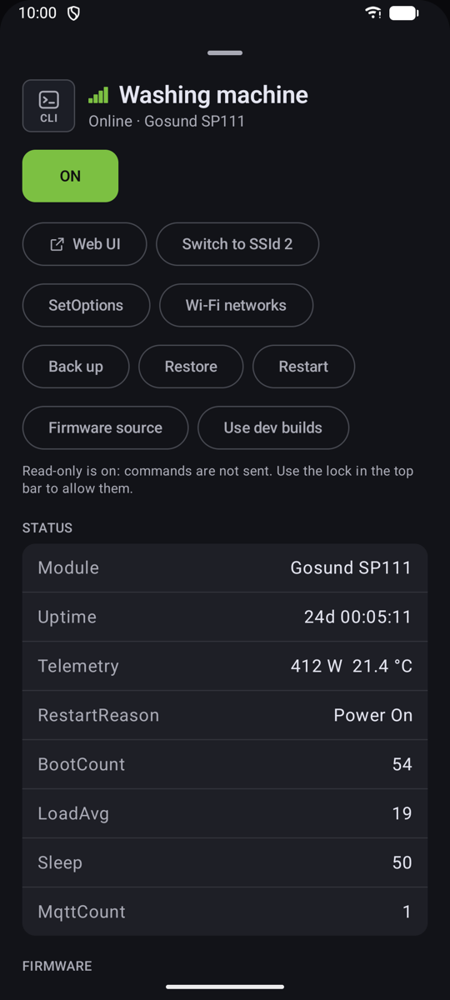
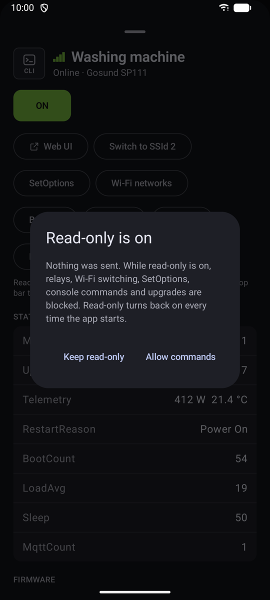
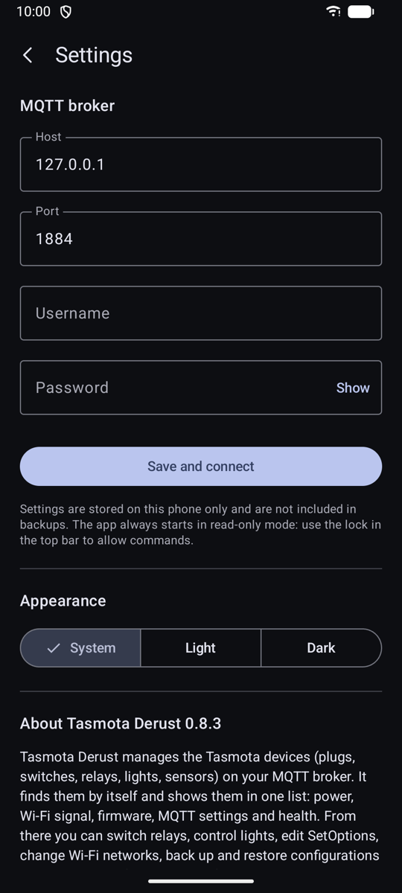
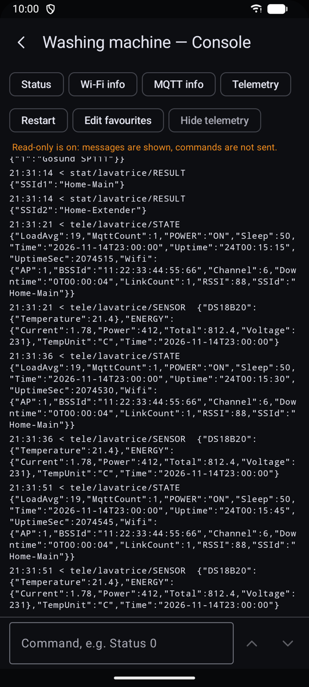
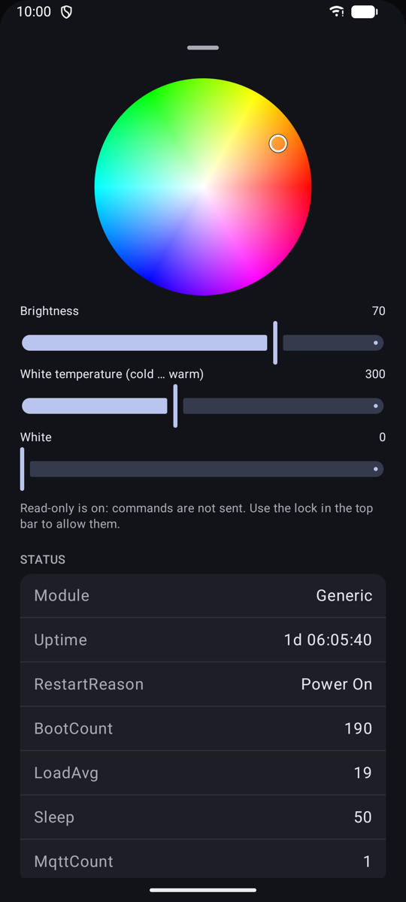
Privacy
It connects only to the MQTT broker you configure and to your devices. It asks GitHub and ota.tasmota.com only for version numbers, release notes and firmware sizes. Nothing about you or your devices is sent anywhere.